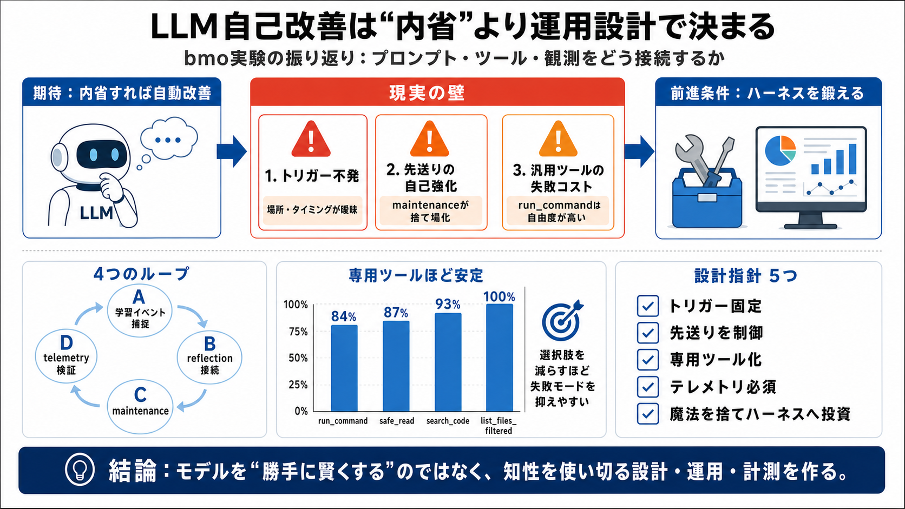

ここでの自己改善
重み更新ではなく、プロンプト/ツール/スキル/観測の組替えで振る舞いを改善
日本語 / self-improvement（振る舞い改善）

LLM×自己改善 / Self-improvement
作者は「自律的なコーディングエージェント」に自己改善ループを入れたが、なぜ“思ったほど良くならない”のかを、運用と計測の観点で整理しました。
内省すれば勝手に良くなる？
自己改善は“意図”だけでは回らず、学習イベントのトリガー配置・実行タイミング・運用摩擦が性能を決めます。
気づき＝自動改善ではない
LLMは自己改善が“得意に見える”一方、並行して常時の改善・持続監視を成立させるのが難しいのが本質です。
4つのループで設計
自己改善は4つのループで設計されたが、実運用では“発火/優先度/失敗コスト/検証”の壁に当たりました。
※本稿の要点は、内部学習ではなく「プロンプト/ツール/スキル/観測」の接続品質が結果を左右する点です。
成功率が“設計の差”を示す
選択肢（自由度）を増やすほど失敗モードが増え、run_commandより専用ツールが信頼性を上げやすい傾向が見えました。
先送りは怠慢ではない
deferralは怠けではなく、“次に取りやすい継続”としてメンテナンスへ流れる確率的な挙動として説明されます。
トリガーは“場所”が命
学習イベントの捕捉は、説明や注入が不十分だと実用運用を満たせず、場所・タイミングが確定したトリガーほど安定します。
反省を“比較可能”にする
コンテキストは短く反省は要約になりがちですが、ツール実行ログの集計は改善の検証軸になります。
“賢くする”ではない
自己改善はモデルを学習で賢くする魔法ではなく、既にある知性を使い切るための設計と運用（ハーネス）を強くすることです。
何が一般化でき、何が注意か
本稿は特定のbmoと個人ワークフローに依存するため因果の断言は難しいが、失敗の型・重要な観測・設計原則は移植可能です。
実装者向け 要点
自己改善を“回す”には、内省機構ではなく運用設計・失敗コスト・観測の作り方が要になります。
結論
モデルが勝手に伸びるのではなく、トリガー配置・専用ツール化・テレメトリで“改善の検証可能性”を作ることが前進の条件です。
No references found